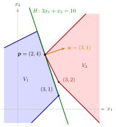

Separating Hyperplane¶
Definition¶
Let and , and let be the hyperplane they determine. For nonempty sets , is a separating hyperplane of and if
or the same with the two inequalities interchanged ( on and on ). In words: lies in one closed halfspace bounded by and lies in the other.
Interpretation¶
A separating hyperplane is a wall between two sets: all of lies on one side of it and all of on the other. In the wall is a line, in a plane.

The figure shows Example 1 below. (blue, corners and ) lies in and has the whole edge between these corners on ; (red, corners and ) lies in and touches only at . The normal points from the side of to the side of . Both sets meet and they share , yet separates them, because the definition only asks for weak inequalities.
The inequalities are weak, so points of and of may lie on itself. The two sets may touch and even share points. If , then and , so every separating hyperplane passes through ; this is the starting point for finding the separating hyperplanes of two polyhedral sets with a common point (Examples 1 and 2 below). Weak separation also has a degenerate side: two sets that lie inside one hyperplane are separated by it, even when they are equal (Example 3 below).
The normal vector points from the side of to the side of in the first form. Replacing by gives the same set with the inequalities interchanged, which is why the definition allows both orders: it is a property of the set , not of the chosen equation.
A common misreading is that "separated" means "disjoint with a gap". Neither is required, and conversely two disjoint sets need not have a separating hyperplane at all unless they are convex, as a circle and its centre show (Separation of a Point and a Closed Convex Set, Example 4). Separation by a hyperplane reappears later as the geometric core of duality in linear optimization.
Key Results¶
- In the first form, separates and exactly when ; this is the definition rewritten with the supremum and infimum.
- If , every separating hyperplane of and contains .
- A point outside a nonempty closed convex set, or on its boundary, can be separated from it by a hyperplane through the point (see Separation of a Point and a Closed Convex Set).
- Two disjoint convex sets always have a separating hyperplane; so do convex with and , see Separation of Disjoint Convex Sets.
- For two polyhedral convex sets with a common point , the hyperplane with has below and above exactly when is a nonnegative combination of the normals of the inequalities of binding at (holding with equality there) and one of those of (see Normal Cone of a Polyhedral Set).
Examples¶
1. Two sets meeting in one point. Let ,
At the left-hand sides of are and those of are , so and every separating hyperplane passes through . Take . On , is one of the constraints. On , write ; adding the first two constraints with these weights gives , that is, . So separates and . Only the second inequality of is binding at , so by the last Key Result above every normal of a separating hyperplane is a positive multiple of , and is the only one. Substituting into gives and , so : the sets touch at one point of .
2. A whole family of separating hyperplanes. Let , the triangle with corners , , , and , with common point . At the second and third inequalities of and the first and third of are binding, and the last Key Result above gives the normals with and ; these are exactly the nonzero nonnegative combinations of () and (, giving ). For : on , , and on the third constraint says , so separates. The edge line of through does not: (left-hand sides , , ) has , so has points on both sides.
3. Sets inside one hyperplane. Two polyhedral sets in that share a segment may or may not have a separating hyperplane. The halfspaces and share the whole plane , which separates them. For there is none: a separating hyperplane would need and on the cube, so at and at the unit vectors , which forces and . But , a segment, is separated from itself by , because both copies lie in that plane.
Prerequisites¶
Related Concepts¶
- Separation of a Point and a Closed Convex Set
- Separation of Disjoint Convex Sets
- Supporting Hyperplane
- Normal Cone of a Polyhedral Set
- Polyhedral Convex Set
- Minimum Characterized by Separation
- Farkas' Lemma
Sources¶
- Math VI: Convexity and Optimization · Week 2
- H. E. Nusse and M. Dienstknecht, Math VI: Convexity and Optimization, lecture notes 2026–2027, Section 2.1
Aliases: separating line, separating plane, separation of two sets Keywords: \boldsymbol{a}^{\top}\boldsymbol{x}\leq b\ \forall\boldsymbol{x}\in V_1, \boldsymbol{a}^{\top}\boldsymbol{x}\geq b\ \forall\boldsymbol{x}\in V_2, \sup_{\boldsymbol{x}\in V_1}\boldsymbol{a}^{\top}\boldsymbol{x}\leq b\leq\inf_{\boldsymbol{x}\in V_2}\boldsymbol{a}^{\top}\boldsymbol{x}, sets on opposite sides of a hyperplane, separation through a common point Symbols: alpha, beta, element of, for all, intersection, real numbers, subset
Last updated: 10 November 2026 16:43
Separating HyperplaneMinimum Characterized by SeparationSeparation of a Point and a Closed Convex SetSeparation of Disjoint Convex SetsSupporting HyperplaneHyperplaneNormal VectorHalfspaceNormal Cone of a Polyhedral SetPolyhedral Convex SetFarkas' Lemma